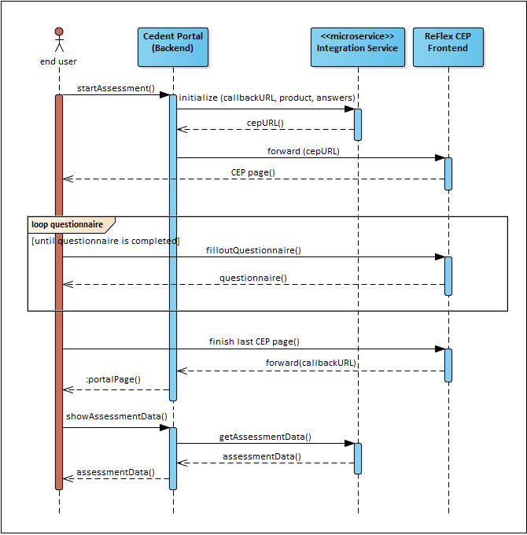

Integration mechanism
Regardless of the chosen integration scenario, the basic integration mechanism stays the same: The CEP Core Integration Endpoint handles the integration of all frontend integration scenarios supported by CEP.

1. Create new assessment with CEP
All CEP Core Endpoints are secured by a JSON Web Token (JWT) (see Security Chapter) that is used for authentication and authorization. A valid JWT to interact with the CEP back end services can either be obtained through a call to the CEP Core Integration Endpoint that issues a new valid token or by a token infrastructure in the customers environment that can issue such a token.
Create a POST request to http://<server>:<port>/cep-core/integration/ (assuming the web context of CEP Core is “cep-core”) containing the following information:
language: Defines the language for the insurance application (must be supported by the knowledge base).subject: Optional. An id that must match the subject from the users JWT. Note that the CEP will not generate user tokens or cookies when an external subject is provided.provided: Must contain the selected insurance products and optional riders (if applicable) and may also contain pre-defined answers for the application form / questionnaire. To learn more about the format, please refer to the definition of the ‘provided section’ in the REST-API section of the RAS documentation chapter.source: Contains information about the provided data’s origin.id: A unique identifier for the integration source. The identifier can be chosen freely by the integrator and is used by ReFlex to mark questions which have been answered using provided data and not by the end user.type: Defines the type of the integration source. Valid values are CustomerPortal and ThirdPartyService. Please use CustomerPortal when integrating the CEP dynamic questionnaire into your system.callbackUrl: The URL that will be called after the questionnaire has been completed successfully.
products: List of selected (main) insurance products including optionally selected riders and their (optional) attributes (e.g Insurance Sum, Policy Duration, etc.). A selected (main) product must match the ID of a main product in the configured ReFlex Knowledge Base’s product definition.riders: List of additionally selected rider products for the associated main product. The selected riders must match the IDs of the riders in the associated (main) product’s definition in the ReFlex Knowledge Base.
questionnaire(optional): Specifies provided answers for questions in the questionnaire that will be pre-filled; answers for unknown questions will be ignored. For example: the integrating portal may provide the Applicant’s date of birth.links(optional): For internal use only. Overrides the selection mechanism for RAS REST URLs by enforcing the usage of the provided links defined. By providing these links, it is possible to select a specific knowledge base version for the newly created assessment, instead of using the latest version which would be the default behaviour.href: Specifies a relative URI path that identifies a sub-resource.rel: This array holds relation types that define the semantics of the link.method: This HTTP method can be used to access the sub-resource.params: Some links also have a map of query params that are used to call the resource.
data(optional): Container for additional data (aka “raw” data). This data will not be evaluated by CEP but transmitted to other subsystems in the ReFlex environment.
For a more detailed specification of provided data, please refer to the definition of provided data in the REST API section of the RAS documentation chapter or the CEP REST API.
POST /integration
content-type:application/json
{
"language" : "en",
"subject" : "my-user-id@client-plattform.com",
"provided" : {
"source": {
"id" : "mySourceId",
"type" : "CustomerPortal",
"callbackUrl" : "localhost:8080/foo"
},
"products": {
"LifeProduct": {
"riders": {
"TPDOwnRider": { }
}
}
},
"questionnaire": {
"LifeProduct.InsuranceSum" : {
"answer": "150000"
},
"LifeProduct.PolicyDuration" : {
"answer": 20
},
"TPDOwnRider.InsuranceSum" : {
"answer": 50000
},
"TPDOwnRider.PolicyDuration" : {
"answer": 12
},
"InsuredPerson.DateOfBirth": {
"answer": "1980-01-01"
}
},
"links": [
{
"href":"/rs/knowledgebases/knowledgebase/versions/1-18-0-snapshot-20150730-0040/riskassessments",
"rel":["process-riskassessments"],
"method":"POST"
},
{
"href":"/rs/knowledgebases/knowledgebase/versions/1-18-0-snapshot-20150730-0040/products",
"rel":["search-products"],
"method":"GET"
},
{
"href":"/rs/knowledgebases/knowledgebase/versions/1-18-0-snapshot-20150730-0040/assessmentfactors",
"rel":["search-assessmentfactors"],
"method":"GET"
} ],
"data": {}
}
}
As a response to the POST request, the CEP Core Integration Endpoint will return the following information (integration info descriptor):
token: The generated JWT for the assessment.assessmentId: The id of the created assessment.- Deprecated
forwardUrl: The URL under which the CEP questionnaire UI can be opened. Deprecated: Please usedirectUrlinstead. directUrl: The URL under which the CEP questionnaire UI can be opened, containing the initial state of the CEP as url parameters.language: The language for the assessment.cookies: An array of cookie values that contain JWT tokens to be set by the client before the CEP questionnaire UI can access the CEP Core Assessment Endpoint. These cookies can be ignored if the CEP should use an already existing JWT access token issued by another system.
Sample response:
{
"token":"abc.def.ghi",
"assessmentId": "123-1234-1234-123",
"forwardUrl": "http://localhost:8080/cep/#/assessment/123-1234-1234-123?lang=en",
"directUrl" : "http://localhost:8080/cep/#/assessment/123-1234-1234-123?lang=en",
"language" : "en",
"cookies" : ["Authorization=Bearer abc.def.ghi;Domain=portal.com;Path=/cep-core;HttpOnly;Secure"]
}
The returned cookies will contain a generated unique id which is used to identify the corresponding assessment (refer to the Security chapter for additional details).
2. Forwarding to CEP user interface
With the URLs returned by the CEP Core Integration Endpoint, the applicant can now be forwarded to the CEP questionnaire UI.
Authentication and cookies
During this forwarding you must set the provided token as HTTP-Cookie for the user-agent. This cookie must be scoped to a domain and path so that it matches all required CEP back end services. This may happen in a regular redirect (30x Response) or in a regular response to an AJAX-Request from the Portal front end application.
The integration info descriptor contains a set of pre-configured secured cookies that you can directly send as response-headers. For example:
HttpServletResponse response;
for (String cookieValue : integrationInfo.cookies) {
response.addHeader("Set-Cookie", cookieValue);
}
Custom bearer tokens
A client portal may alternatively use its own JWT bearer token infrastructure to provide their users with a valid bearer token. Such a token must fulfil the following requirements:
- The portal provides the user-agent with a valid JWT Access Token encoded as
Set-CookieorAuthenticationheader as described in Security: Token Evaluation.- The Cookie must be set for all CEP back end services.
- The custom token contains the claim
subjectthat equals the subject provided as parameter to the assessment initialisation. - The custom token contains the claim
scopeswith an array of all scopes configured incom.hannoverre.reflex.cep.service.*.requiredScopes. The minimal scope in the default configuration is['reflex.cep.assessment']. - The custom token uses a key/algorithm that is configured in the keystore (see Security: Keystore Configuration).
Redirection and AssessmentId
The user-agent should be forwarded to the directUrl from the previous integration endpoint response.
You may use the
directUrlthat contains the assessmentId and language as URL parameter which will be evaluated by CEP automatically.
The end user can now start the assessment, i.e. fill out the CEP questionnaire. After all questions have been answered correctly (i.e. the questionnaire is valid) and the end user submits the questionnaire, CEP will automatically redirect the end user’s browser to the provided/source/url specified in the initial request to the CEP Core Integration Endpoint.
3. Provide additional answers
After the end user has completed the questionnaire, the client portal may choose to add additional answers to the assessment or even remove given answers. The client portal must ensure that it does not provide additional data while the end user is interacting with the CEP questionnaire UI.
The CEP Core Integration Endpoint can be used by the client portal to provide additional answers and instantly get a new assessment result. The endpoint is documented in the CEP REST API.
The Answer overwrite mode can be used to control under which circumstances an additional answer can overwrite an answer given by the end user or another provided data block. Please refer to the REST-API section of the RAS documentation chapter to learn more about this mechanism.
The structure of the provided data element is the same as the provided field in the Initialisation block.
4. Retrieving assessment data
You can retrieve the full set of assessment data including the risk assessment result managed by CEP for a particular assessment/application form at any time (e.g. while the end user is providing answers to the questionnaire or while it is stored using a durable persistence configuration and has not been deleted).
- Create a GET request to
http://<server>:<port>/cep-core/integration/<assessmentId>containing the following information:assessmentId: the id of your assessment
Sample request:
GET /cep-core/integration/123456789
The CEP Core Integration Endpoint will respond with the assessment data including all questions and answers and the full risk assessment result details as a JSON document.